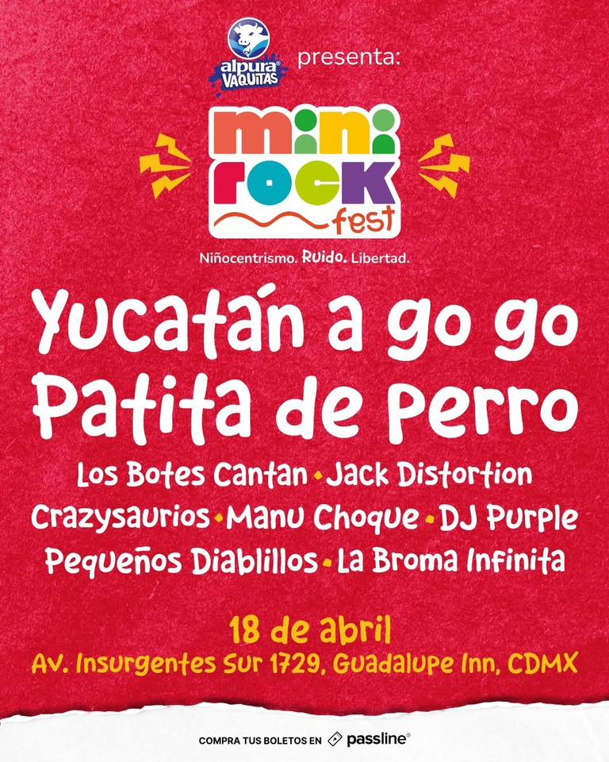

MINI ROCK FEST:
LA REBELIÓN DE LOS PEQUEÑOS
Alpura Vaquitas presenta Mini Rock Fest, el primer festival musical niñocentrista en México. Una propuesta que transforma el entretenimiento familiar a través de una lente única: donde a los niños se les permite ser, estar y gritar libremente.
AVISO DE NUEVA SEDE
¡Atención, tribu! Hay nueva sede para la primera gran descarga de libertad. El evento se traslada a Quarry Studios (Blvd. Gransur 100), el espacio perfecto para ofrecer una experiencia digna a los Mini Rockers.
UN LINE-UP SIN "SIMPLEZAS"
Mini Rock Fest no subestima a su audiencia. El cartel cuenta con bandas icónicas de la escena nacional como Yucatán A go gó y Patita de Perro, además de la fuerza internacional de Jack Distortion (Chile) y Manu Choque (Argentina).
LINE-UP CONFIRMADO
- Yucatán A go gó & Patita de perro (Leyendas nacionales)
- Crazysaurios & Los botes cantan
- DJ Purple & Pequeños diablillos
- Jack Distortion & Manu Choque (Descarga internacional)
DISEÑADO A LA ALTURA DE SUS PROTAGONISTAS
Aquí la niñez es el centro y las personas adultas son las invitadas. El festival es un espacio sin etiquetas donde el slam es un baile de apoyo: si alguien cae, la banda se detiene para levantarle. Una lección de ética rockera desde los primeros años.
ZONAS DE EXPERIENCIA
- ARTE EN SINCRONÍA: Talleres de pintura con música en vivo.
- ZONA MAKER: Personalización de prendas y estética rockera.
- HORARIO: 1:30 PM a 8:30 PM (Pensado para la Tribu).